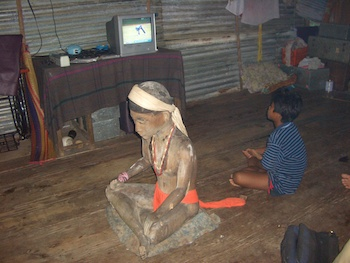
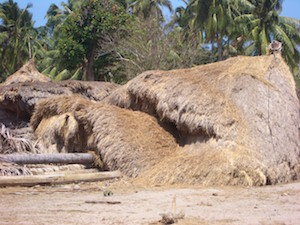

- Title Page
- Introduction
- The Islands and the Anthropologist
- Tsunami and First Response
- Wading In
- Second Tsunami
- In Search of Axes
- Steering a Sustainable Course
- Steering Committee
- Exchange Visit
- Nirnay Means Decision
- Up and Running
- Caritas Leans In
- Singh Sounds a Warning
- Midcourse Correction
- The SOPHIA Experiment
- Taking Stock
- SOPHIA Reports
Tsunami and First Response
On the morning after Christmas 2004, a 9.1 magnitude earthquake off the west coast of Sumatra unleashed a tsunami that thundered north toward the Nicobars, some 550 kilometers (340 miles) away. “It sounded just like a plane, but it was the wave,” said a Nicobarese man who survived the eight punishing waves, each 10-20 meters (32-64 feet) high. “I made my family sit in a boat. But the waves came back and the boat sank. They were all washed away. My entire family died, all fifteen of them. Even my smallest child with her mother and my eldest daughter, too.”[7]

© Simron Singh
A salvaged religious figure
The news from the Nicobars reached Singh in Lucknow, India, on December 28, two days after the tsunami. The message, relayed via shipboard radio, was from Singh’s friend Rasheed: “Central Nicobars entirely wiped out,” Rasheed said. “Do something as soon as possible.”The devastation was shocking: 8,000 reported dead, injured or missing,[8] the fishing reef destroyed, pigs and chickens drowned, houses toppled, coconut plantations felled. One island was broken into three pieces, others had subsided several feet into the ocean, and most had lost long stretches of coastline. Boats and gear were lost, and all but two of the ancestral effigies had washed away.
2004 footage of tsunami damage to the Nicobars.
© Aftermath-The Second Flood, Golden Girls Filmproduktion, 2014
Singh could not go to the Nicobars—all transportation to the islands was shut down—so he called a news conference and then called Giles, his journalist friend in Port Blair. Later that day, Giles talked himself aboard the first relief ship to the Nicobars, claiming family there. His photos and video of the disaster told the tale. The once-verdant paradise was now a shattered landscape of dun-greys and browns. Bodies lay bloated in the still-muddy waters, and survivors were dying of hunger and thirst. Military personnel organized an evacuation to inland camps, where blue tarps provided the only shelter. The people were unable to organize themselves; the ocean had swept away many of the old people -- their leaders and ritual masters.

© Simron Singh
Tsunami damage
An outpouring of help. The 2004 earthquake and tsunami was one of the deadliest natural disasters in history, killing a quarter of a million people in 14 countries and leaving 2 million displaced. The outpouring of help was also unprecedented: nearly $14 billion in humanitarian aid, perhaps $40 million of which found its way to the Nicobars.[9] The Indian government immediately mounted a massive relief operation, sending medical supplies, clothing, and tons of rations: rice, lentils, potatoes, onions, vegetables, milk powder, sugar, tea, flour, cooking oil, spices—even pickles.
The government also announced immediate relief payments of 2,000 rupees (about $46) per household, with further compensation to come later for loss of life and lost crop land. Aid delivery in the islands was difficult. Some communities were reachable only by canoe or helicopter, and the waters were infested with crocodiles. But the government was resolute; one visiting minister confidently assured a group of Nicobarese that the government could provide them with “anything.”[10]
By mid-January, scores of NGOs had taken up residence in Port Blair, including big international players like UNICEF, World ORT, and CARE as well as many Indian welfare and sectarian organizations like the Rajiv Gandhi Foundation and the Jainist charity Bharatiya Jain Sanghatana. But when it came to the Nicobarese, the NGOs’ hands were tied. Because the Nicobarese were a protected tribe, the Indian government strictly controlled outsiders’ access to the islands; they could contract to provide supplies and help design interventions, but for the most part the government would deliver them.
Only Oxfam India had direct access in the Central Nicobars, having contracted with the Nicobar Youth Association (NYA), a qualified NGO in its own right, to distribute seeds, organize wage work, and provide administrative support to the Tribal Council. The rest of the NGOs were required to render aid from a distance, often without much first-hand information. Not knowing the culture or what might be needed, some NGOs simply sent what provisions they had, and not all of it was appropriate. Cookies, potato chips, ramen noodles, Coke, chocolate, wool blankets, winter clothing—all found their way to the Nicobarese, who accepted whatever was offered.
[7] Ibid.
[8] Death and casualty figures reported by The Times of India, December 29, 2004. Later figures suggested that 3,513 lives were lost in the Andamans and Nicobars, most of them Nicobarese; Venkat Ramanujam Ramani, “Gifts Without Dignity?” p. 21.
[9] Ibid, p. 10. The $40 million estimate was provided by Singh, who stressed that the total is difficult to know because most NGOs did not report their spending on the islands to the government of India, despite being repeatedly asked to do so,